General Principles and Processes of Isolation of Elements
A few elements like carbon, sulphur, gold and noble
gases, occur in free state while others in combined forms
in the earth’s crust. The extraction and isolation of an
element from its combined form involves various
principles of chemistry. A particular element may occur
in a variety of compounds. The process of metallurgy
and isolation should be such that it is chemically feasible
and commercially viable. Still, some general principles
are common to all the extraction processes of metals.
For obtaining a particular metal, first we look for
minerals which are naturally occurring chemical
substances in the earth’s crust obtainable by mining.
Out of many minerals in which a metal may be found,
only a few are viable to be used as sources of that
metal. Such minerals are known as ores.
Rarely, an ore contains only a desired substance.
It is usually contaminated with earthly or undesired
materials known as gangue. The extraction and isolation
of metals from ores involve the following major steps:
• Concentration of the ore,
• Isolation of the metal from its concentrated ore, and
• Purification of the metal.
The entire scientific and technological process used
for isolation of the metal from its ores is known as
metallurgy.
Occurrence of Metals:
Elements vary in abundance. Among metals, aluminium is the most
abundant. It is the third most abundant element in earth’s crust (8.3%
approx. by weight). It is a major component of many igneous minerals
including mica and clays. Many gemstones are impure forms of Al2O3
and the impurities range from Cr (in ‘ruby’) to Co (in ‘sapphire’). Iron
is the second most abundant metal in the earth’s crust. It forms a
variety of compounds and their various uses make it a very important
element. It is one of the essential elements in biological systems as well.
The principal ores of aluminium, iron, copper and zinc have been
given below:
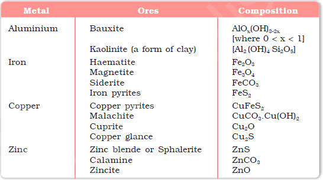
For the purpose of extraction, bauxite is chosen for aluminium. For
iron, usually the oxide ores which are abundant and do not produce
polluting gases (like SO2 that is produced in case iron pyrites) are taken.
For copper and zinc, any of the listed ores may be used
depending upon availability and other relevant factors. Before proceeding
for concentration, ores are graded and crushed to reasonable size.
Concentration of Ores:
Removal of the unwanted materials (e.g., sand, clays, etc.) from the ore
is known as concentration, dressing or benefaction. It involves several
steps and selection of these steps depends upon the differences in
physical properties of the compound of the metal present and that of
the gangue. The type of the metal, the available facilities and the
environmental factors are also taken into consideration. Some of the
important procedures are described below.
Hydraulic Washing:
This is based on the differences in gravities of the ore and the gangue
particles. It is therefore a type of gravity separation. In one such process,
an upward stream of running water is used to wash the powdered ore.
The lighter gangue particles are washed away and the heavier ores are
left behind.
Magnetic Separation:
This is based on differences in
magnetic properties of the ore
components.
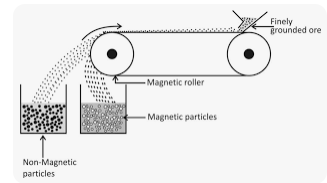
If either the ore
or the gangue (one of these
two) is capable of being
attracted by a magnetic
field, then such separations
are carried out (e.g., in case
of iron ores). The ground
ore is carried on a conveyer
belt which passes over a
magnetic roller.
Froth Floatation Method:
This method has been in use for removing gangue from sulphide ores. In
this process, a suspension of the powdered ore is made with water. To it,
collectors and froth stabilisers are added. Collectors (e. g., pine oils, fatty
acids, xanthates, etc.) enhance non-wettability
of the mineral particles and froth stabilisers
(e. g., cresols, aniline) stabilise the froth.
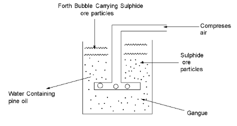
The mineral particles become wet by oils
while the gangue particles by water. A rotating
paddle agitates the mixture and draws air in
it. As a result, froth is formed which carries
the mineral particles. The froth is light and is
skimmed off. It is then dried for recovery of
the ore particles.
Sometimes, it is possible to separate two
sulphide ores by adjusting proportion of oil
to water or by using ‘depressants’. For
example, in case of an ore containing ZnS
and PbS, the depressant used is NaCN. It
selectively prevents ZnS from coming to the
froth but allows PbS to come with the froth.
Leaching:
Leaching is often used if the ore is soluble in some suitable solvent.
The following examples illustrate the procedure:
(a) Leaching of alumina from bauxite:
The principal ore of aluminium, bauxite, usually contains SiO2,
iron oxides and titanium oxide (TiO2) as impurities. Concentration
is carried out by digesting the powdered ore with a concentrated
solution of NaOH at 473 – 523 K and 35 – 36 bar pressure. This
way, Al2O3 is leached out as sodium aluminate (and SiO2 too as
sodium silicate) leaving the impurities behind:
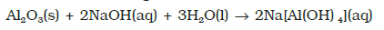
The aluminate in solution is neutralised by passing CO2 gas and hydrated
Al2O3 is precipitated. At this stage, the solution is seeded with freshly
prepared samples of hydrated Al2O3 which induces the precipitation:
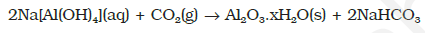
The sodium silicate remains in the solution and hydrated alumina
is filtered, dried and heated to give back pure The sodium silicate remains in the solution and hydrated alumina
is filtered, dried and heated to give back pure Al2O3::
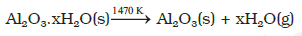
(b) Other examples:
In the metallurgy of silver and that of gold, the respective metal is
leached with a dilute solution of NaCN or KCN in the presence of
air (for O2) from which the metal is obtained later by replacement:
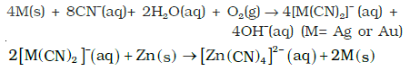
Extraction of Crude Metal from Concentrated Ore:
The concentrated ore must be converted into a form which is suitable
for reduction. Usually the sulphide ore is converted to oxide before
reduction. Oxides are easier to reduce (for the reason see box). Thus
isolation of metals from concentrated ore involves two major steps viz.,
(a) conversion to oxide, and
(b) reduction of the oxide to metal.
(i) Calcination: Calcinaton involves heating when the volatile matter
escapes leaving behind the metal oxide:
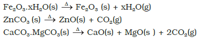
(ii) Roasting: In roasting, the ore is heated in a
regular supply of air in a furnace at a
temperature below the melting point of the
metal. Some of the reactions involving
sulphide ores are:
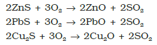
The sulphide ores of copper are heated
in reverberatory furnace. If the ore contains
iron, it is mixed with silica before heating.
Iron oxide ‘slags of ’* as iron silicate and
copper is produced in the form of copper
matte which contains Cu2S and FeS.
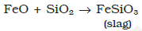
The SO2 produced is utilised for manufacturing H2SO4.
(b) Reduction of oxide to the metal:
Reduction of the metal oxide usually involves heating it with some
other substance acting as a reducing agent (C or CO or even another
metal). The reducing agent (e.g., carbon) combines with the oxygen
of the metal oxide.
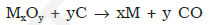
Some metal oxides get reduced easily while others are very
difficult to be reduced (reduction means electron gain or
electronation). In any case, heating is required. To understand the
variation in the temperature requirement for thermal reductions
(pyrometallurgy) and to predict which element will suit as the
reducing agent for a given metal oxide (MxOy), Gibbs energy
interpretations are made.
Thermodynamic principles of Metallurgy
Some basic concepts of thermodynamics help us in understanding the
theory of metallurgical transformations. Gibbs energy is the most
significant term here.The change in Gibbs energy, ΔG for any process
at any specified temperature, is described by the equation:
ΔG = ΔH – TΔS
where, ΔH is the enthalpy change and ΔS is the entropy change for
the process. For any reaction, this change could also be explained
through the equation:
ΔGo = – RTlnK
where, K is the equilibrium constant of the ‘reactant – product’
system at the temperature,T. A negative ΔG implies a +ve K in equation
6.15. And this can happen only when reaction proceeds towards
products. From these facts we can make the following conclusions:
1. When the value of ΔG is negative , only then the
reaction will proceed. If ΔS is positive, on increasing the temperature
(T), the value of TΔS would increase (ΔH < TΔS) and then ΔG will
become –ve.
2. If reactants and products of two reactions are put together in a system
and the net ΔG of the two possible reactions is –ve, the overall reaction
will occur. So the process of interpretation involves coupling of the
two reactions, getting the sum of their ΔG and looking for its
magnitude and sign. Such coupling is easily understood through
Gibbs energy (ΔGo) vs T plots for formation of the oxides.
The reducing agent forms its oxide when the metal oxide is reduced.
The role of reducing agent is to provide ΔGo negative and large enough
to make the sum of ΔGo of the two reactions (oxidation of the reducing
agent and reduction of the metal oxide) negative.
As we know, during reduction, the oxide of a metal decomposes:
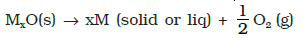
The reducing agent takes away the oxygen. Equation 6.16 can be
visualised as reverse of the oxidation of the metal. And then, the Δf GV
value is written in the usual way:
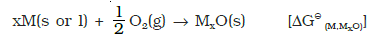
If reduction is being carried out through the above equation, the
oxidation of the reducing agent (e.g., C or CO) will be there:
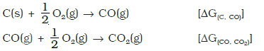
If carbon is taken, there may also be complete oxidation of the
element to CO2>:
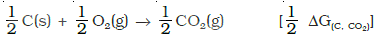
On subtracting the reduction equation from one of the three oxidation equations, we get:
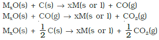
These reactions describe the actual reduction of the metal oxide,
MxO that we want to accomplish. The ΔrGo values for these reactions in
general, can be obtained by similar subtraction of the corresponding
ΔrGo values.
As we have seen, heating (i.e., increasing T) favours a negative
value of ΔrGo. Therefore, the temperature is chosen such that the sum
of ΔrGo in the two combined redox process is negative. In ΔrGo vs
T plots, this is indicated by the point of intersection of the two curves
(curve for MxO and that for the oxidation of the reducing substance).
After that point, the ΔrGo value becomes more negative for the combined
process including the reduction of MxO. The difference in the two ΔrGo
values after that point determines whether reductions of the oxide of
the upper line is feasible by the element represented by the lower line.
If the difference is large, the reduction is easier.
The graphical representation of Gibbs energy was first used by H.J.T.Ellingham. This provides a sound basis for considering the choice of reducing agent in the reduction of oxides. This is known as Ellingham Diagram. Such diagrams help us in predicting the feasibility of thermal reduction of an ore. The criterion of feasibility is that at a given temperature, Gibbs energy of the reaction must be negative.
(a) Ellingham diagram normally consists of plots of ΔfGo vs T for formation of oxides of elements i.e., for the reaction,
2xM(s) + O2(g) → 2MxO(s)
In this reaction, the gaseous amount (hence molecular randomness) is decreasing from left to right due to the consumption of gases leading to a –ve value of ΔS which changes the sign of the second term in equation . Subsequently ΔG shifts towards higher side despite rising T (normally, ΔG decreases i.e., goes to lower side with increasing temperature). The result is +ve slope in the curve for most of the reactions shown above for formation of MxO(s).
(b) Each plot is a straight line except when some change in phase (s→liq or liq→g) takes place. The temperature at which such change occurs, is indicated by an increase in the slope on +ve side (e.g., in the Zn, ZnO plot, the melting is indicated by an abrupt change in the curve).
(c) There is a point in a curve below which ΔG is negative (So MxO is stable). Above this point, MxO will decompose on its own.
(d) In an Ellingham diagram, the plots of ΔGo> for oxidation (and therefore reduction of the corresponding species) of common metals and some reducing agents are given. The values of ΔfGo, etc.(for formation of oxides) at different temperatures are depicted which make the interpretation easy.
(e) Similar diagrams are also constructed for sulfides and halides and it becomes clear why reductions of MxO is difficult. There, the ΔfGo of MxO is not compensated.
Limitations of Ellingham Diagram
1. The graph simply indicates whether a reaction is possible or not i.e., the tendency of reduction with a reducing agent is indicated. This is so because it is based only on the thermodynamic concepts. It does not say about the kinetics of the reduction process (Cannot answer questions like how fast it could be ?).
2. The interpretation of ΔGo is based on K (ΔGo = – RT lnK). Thus it is presumed that the reactants and products are in equilibrium:
MxO + Ared ⇋ xM + AOox
This is not always true because the reactant/product may be solid. [However it explains how the reactions are sluggish when every species is in solid state and smooth when the ore melts down.It is interestng to note here that ΔH (enthalpy change) and the ΔS (entropy change) values for any chemical reaction remain nearly constant even on varying temperature. So the only dominant variable in equation becomes T. However, ΔS depends much on the physical state of the compound. Since entropy depends on disorder or randomness in the system, it will increase if a compound melts (s→l) or vapourises (l→g) since molecular randomness increases on changing the phase from solid to liquid or from liquid to gas].
Applications
(a) Extraction of iron from its oxides:
Oxide ores of iron, after concentration through calcination/roasting
(to remove water, to decompose carbonates and to oxidise sulphides)
are mixed with limestone and coke and fed into a Blast furnace from
its top. Here, the oxide is reduced to the metal. Thermodynamics
helps us to understand how coke reduces the oxide and why this
furnace is chosen. One of the main reduction steps in this process is:

It can be seen as a couple of two simpler reactions. In one, the
reduction of FeO is taking place and in the other, C is being oxidised
to CO:
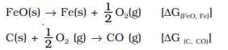
When both the reactions take place to yield the overall equation, the
net Gibbs energy change becomes:
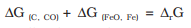
Naturally, the resultant reaction will take place when the right hand
side in the above equation is negative. In ΔGo
vs T plot representing reaction
, the plot goes upward and that representing the change C→CO
(C,CO) goes downward. At temperatures above 1073K (approx.), the
C,CO line comes below the Fe,FeO line [ΔG(C, CO) < ΔG(Fe, FeO)]. So in this
range, coke will be reducing the FeO and will itself be oxidised to CO.
In a similar way the reduction of Fe3O4 and Fe2O3 at relatively lower
temperatures by CO can be explained on the basis of lower lying points
of intersection of their curves with the CO, CO2 curve in the following Figure.
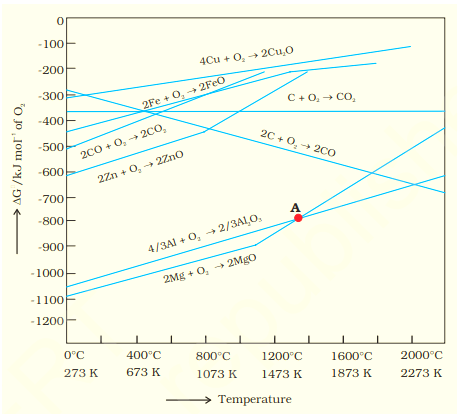
In the Blast furnace, reduction of iron oxides takes place in different
temperature ranges. Hot air is blown from the bottom of the furnace
and coke is burnt to give temperature upto about 2200K in the lower
portion itself. The burning of coke therefore supplies most of the heat
required in the process. The CO and heat moves to upper part of the
furnace. In upper part, the temperature is lower and the iron oxides
(Fe2O3 and Fe3O4) coming from the top are reduced in steps to FeO.
Thus, the reduction reactions taking place in the lower temperature
range and in the higher temperature range, depend on the points of
corresponding intersections in the ΔrGo vs T plots. These reactions can
be summarised as follows:
At 500 – 800 K (lower temperature range in the blast furnace)–
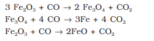
At 900 – 1500 K (higher temperature range in the blast
furnace):
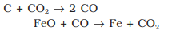
Limestone is also decomposed to CaO
which removes silicate impurity of the ore
as slag. The slag is in molten state and
separates out from iron.
The iron obtained from Blast furnace
contains about 4% carbon and many
impurities in smaller amount (e.g., S, P, Si,
Mn). This is known as pig iron and cast into
variety of shapes. Cast iron is different from
pig iron and is made by melting pig iron
with scrap iron and coke using hot air blast.
It has slightly lower carbon content (about
3%) and is extremely hard and brittle.
Further Reductions:
Wrought iron or malleable iron is the
purest form of commercial iron and is
prepared from cast iron by oxidising impurities in a
reverberatory furnace lined with haematite. This
haematite oxidises carbon to carbon monoxide:
Limestone is added as a flux and sulphur, silicon
and phosphorus are oxidised and passed into the slag. The metal is
removed and freed from the slag by passing through rollers.
(b) Extraction of copper from cuprous oxide [copper(I) oxide]:
In the graph of ΔrGo vs T for formation of oxides shown above, the
Cu2O line is almost at the top. So it is quite easy to reduce oxide
ores of copper directly to the metal by heating with coke (both
the lines of C, CO and C, CO2 are at much lower positions in the
graph particularly after 500 – 600K). However most of the ores
are sulphide and some may also contain iron. The sulphide ores
are roasted/smelted to give oxides:
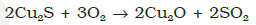
The oxide can then be easily reduced to metallic copper using coke:

In actual process, the ore is heated in a reverberatory furnace after
mixing with silica. In the furnace, iron oxide ‘slags of’ as iron silicate
and copper is produced in the form of copper matte. This contains
Cu2S and FeS.
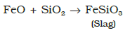
Copper matte is then charged into silica lined convertor. Some
silica is also added and hot air blast is blown to convert the remaining
FeS, FeO and Cu2S/Cu2O to the metallic copper. Following reactions
take place:
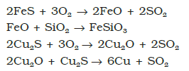
The solidified copper obtained has blistered appearance due to the
evolution of SO2 and so it is called blister copper.
(c) Extraction of zinc from zinc oxide
The reduction of zinc oxide is done using coke. The temperature in
this case is higher than that in case of copper. For the purpose of
heating, the oxide is made into brickettes with coke and clay.
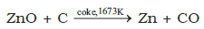
The metal is distilled off and collected by rapid chilling.
Electrochemical Principles of Metallurgy
We have seen how principles of thermodyamics are applied to
pyrometallurgy. Similar principles are effective in the reductions of metal
ions in solution or molten state. Here they are reduced by electrolysis or
by adding some reducing element.
In the reduction of a molten metal salt, electrolysis is done. Such
methods are based on electrochemical principles which could be
understood through the equation,
ΔGo = – nFEo
here n is the number of electrons and Eo is the electrode potential of
the redox couple formed in the system. More reactive metals have large
negative values of the electrode potential. So their reduction is difficult.
If the difference of two Eo values corresponds to a positive E0 and
consequently negative ΔGo in the above equation , then the less reactive metal
will come out of the solution and the more reactive metal will go to the
solution, e.g.,
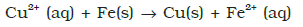
In simple electrolysis, the Mn+ ions are discharged at negative
electrodes (cathodes) and deposited there. Precautions are taken
considering the reactivity of the metal produced and suitable materials
are used as electrodes. Sometimes a flux is added for making the
molten mass more conducting.
Aluminium
In the metallurgy of aluminium, purified Al2O3 is mixed with
Na3AlF6 or CaF2 which lowers the melting point of the mix and brings
conductivity. The fused matrix is electrolysed. Steel vessel with lining
of carbon acts as cathode and graphite
anode is used. The overall reaction may
be written as:
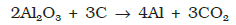
This process of electrolysis is widely
known as Hall-Heroult process.
Thus electrolysis of the molten mass
is carried out in an electrolytic cell using
carbon electrodes. The oxygen liberated
at anode reacts with the carbon of anode
producing CO and CO2. This way for each kg of
aluminium produced, about 0.5 kg of carbon
anode is burnt away. The electrolytic reactions are:
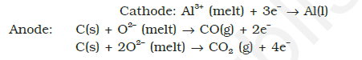
Copper from Low Grade Ores and Scraps
Copper is extracted by hydrometallurgy from low grade ores. It is leached
out using acid or bacteria. The solution containing Cu2+ is treated with
scrap iron or H2
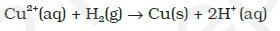
Oxidation Reduction
Besides reductions, some extractions are based on oxidation particularly
for non-metals. A very common example of extraction based on
oxidation is the extraction of chlorine from brine (chlorine is abundant
in sea water as common salt) .
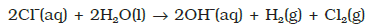
The ΔGo for this reaction is + 422 kJ. When it is converted to Eo
(using ΔGo = – nFEo), we get Eo = – 2.2 V. Naturally, it will require an
external e.m.f. that is greater than 2.2 V. But the electrolysis requires
an excess potential to overcome some other hindering reactions. Thus,
Cl2 is obtained by electrolysis giving out H2 and aqueous NaOH as byproducts.
Electrolysis of molten NaCl is also carried out. But in that
case, Na metal is produced and not NaOH.
As studied earlier, extraction of gold and silver involves leaching the
metal with CN-. This is also an oxidation reaction (Ag → Ag+ or Au → Au+).
The metal is later recovered by displacement method.
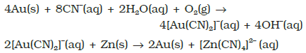
In this reaction zinc acts as a reducing agent.
Refining:
A metal extracted by any method is usually contaminated with some
impurity. For obtaining metals of high purity, several techniques are
used depending upon the differences in properties of the metal and the
impurity. Some of them are listed below.
(a) Distillation (b) Liquation
(c) Electrolysis (d) Zone refining
(e) Vapour phase refining (f ) Chromatographic methods
These are described in detail here.
(a) Distillation:
This is very useful for low boiling metals like zinc and mercury. The
impure metal is evaporated to obtain the pure metal as distillate.
(b) Liquation:
In this method a low melting metal like tin can be made to flow on
a sloping surface. In this way it is separated from higher melting
impurities.
(c) Electrolytic refining:
In this method, the impure metal is made to act as anode. A strip
of the same metal in pure form is used as cathode. They are put in
a suitable electrolytic bath containing soluble salt of the same metal.
The more basic metal remains in the solution and the less basic
ones go to the anode mud. This process is also explained using the
concept of electrode potential, over potential, and Gibbs energy
which you have seen in previous sections. The reactions are:
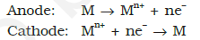
Copper is refined using an electrolytic method. Anodes are of
impure copper and pure copper strips are taken as cathode. The
electrolyte is acidified solution of copper sulphate and the net result
of electrolysis is the transfer of copper in pure form from the anode
to the cathode:
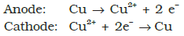
Impurities from the blister copper deposit as anode mud which
contains antimony, selenium, tellurium, silver, gold and platinum;
recovery of these elements may meet the cost of refining.
Zinc may also be refined this way.
(d) Zone refining:
This method is based on the principle that the impurities are more
soluble in the melt than in the solid state of the metal. A circular
mobile heater is fixed at one end of a rod of the impure metal
The molten zone moves along with the heater which is
moved forward. As the heater moves forward, the pure metal
crystallises out of the melt and the impurities pass on into
the adjacent molten zone. The process is
repeated several times and the heater is moved
in the same direction. At one end, impurities
get concentrated. This end is cut off. This
method is very useful for producing
semiconductor and other metals of very high
purity, e.g., germanium, silicon, boron,
gallium and indium.
(e) Vapour phase refining:
In this method, the metal is converted into its volatile compound
and collected elsewhere. It is then decomposed to give pure metal.
So, the two requirements are:
(i) the metal should form a volatile compound with an available
reagent,
(ii) the volatile compound should be easily decomposable, so that
the recovery is easy.
Following examples will illustrate this technique.
Mond Process for Refining Nickel: In this process, nickel is heated in a
stream of carbon monoxide forming a volatile complex, nickel
tetracarbonyl:

The carbonyl is subjected to higher temperature so that it is
decomposed giving the pure metal:
van Arkel Method for Refining Zirconium or Titanium: This method is
very useful for removing all the oxygen and nitrogen present in the
form of impurity in certain metals like Zr and Ti. The crude metal is
heated in an evacuated vessel with iodine. The metal iodide being
more covalent, volatilises:
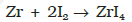
The metal iodide is decomposed on a tungsten filament, electrically
heated to about 1800K. The pure metal is thus deposited on the
filament.
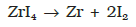
(f) Chromatographic methods:
This method is based on the principle that different components of a
mixture are differently adsorbed on an adsorbent. The mixture is put
in a liquid or gaseous medium which is moved through the adsorbent.
Different components are adsorbed at different levels on the column.
Later the adsorbed components are removed (eluted) by using suitable
solvents (eluant). Depending upon the physical state of the moving
medium and the adsorbent material and also on the process of passage
of the moving medium, the chromatographic method* is given the name.
In one such method the column of Al2O3 is prepared in a glass tube
and the moving medium containing a solution of the components is in
liquid form. This is an example of column chromatography. This is very
useful for purification of the elements which are available in minute
quantities and the impurities are not very different in chemical properties
from the element to be purified. There are several chromatographic
techniques such as paper chromatography, column chromatography,
gas chromatography, etc.
Uses of Aluminium,Copper,Zinc and Iron:
Aluminium foils are used as wrappers for chocolates. The fine dust of
the metal is used in paints and lacquers. Aluminium, being highly
reactive, is also used in the extraction of chromium and manganese
from their oxides. Wires of aluminium are used as electricity conductors.
Alloys containing aluminium, being light, are very useful.
Copper is used for making wires used in electrical industry and for
water and steam pipes. It is also used in several alloys that are rather
tougher than the metal itself, e.g., brass (with zinc), bronze (with tin)
and coinage alloy (with nickel).
Zinc is used for galvanising iron. It is also used in large quantities
in batteries, as a constituent of many alloys, e.g., brass, (Cu 60%, Zn
40%) and german silver (Cu 25-30%, Zn 25-30%, Ni 40–50%). Zinc
dust is used as a reducing agent in the manufacture of dye-stuffs,
paints, etc.
Cast iron, which is the most important form of iron, is used for
casting stoves, railway sleepers, gutter pipes , toys, etc. It is used in the
manufacture of wrought iron and steel. Wrought iron is used in making
anchors, wires, bolts, chains and agricultural implements. Steel finds
a number of uses. Alloy steel is obtained when other metals are added
to it. Nickel steel is used for making cables, automobiles and aeroplane
parts, pendulum, measuring tapes, chrome steel for cutting tools and
crushing machines, and stainless steel for cycles, automobiles, utensils,
pens, etc.